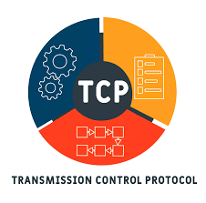
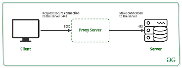

Protocolo de Controle de Transmissão é um dos protocolos de comunicação, da camada de transporte da rede de computadores do Modelo OSI, que dão suporte a rede global Internet, verificando se os dados são enviados na sequência correta e sem erros via rede.

Redes de computadores utilizam um protocolo de tunelamento quando um protocolo de rede encapsula um protocolo de carga diferente. Por meio da utilização de tunelamento pode-se, por exemplo, transportar uma carga sobre uma rede de entrega incompatível, ou fornecer um caminho seguro através de uma rede não confiável